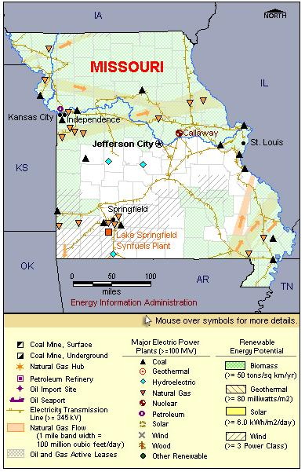

State Overview
There is one operating nuclear power plant in Missouri:
Callaway in Callaway County
- On July 24, 2008, a Combined License (COL) application was filed for a second reactor at Callaway. On June 29, 2009, the Nuclear Regulatory Commission suspended review of the application at the applicant's request.
Contribution of Nuclear Power
Nuclear capacity represents only about 5% of Missouri’s total electric capacity; however, nuclear power generates almost 10% of the State’s total electric power generation, second only to coal.
Nearly all of the electricity produced in Missouri is consumed in the State.
License Renewals
- Callaway: On November 18, 2008, AmerenUE notified the NRC that it plans to submit a license renewal application for the Callaway plant. The current license expires in October 2024.
New Applications
- Callaway: On July 24, 2008, a Combined License (COL) application was submitted for a new unit at the Callaway plant. The application is for an Evolutionary Power Reactor (EPR).

|
| Missouri Total Electric Power Industry, Summer Capacity and Net Generation, by Energy Source, 2008 |
| Primary Energy Source |
Summer Capacity
(MW) |
Share of State Total
(Percent) |
Net Generation
(Thousand MWh) |
Share of State Total
(Percent) |
| Nuclear |
1,190 |
5.7 |
9,379 |
10.3 |
| Coal |
11,240 |
54.3 |
73,532 |
80.8 |
| Hydro and Pumped Storage |
1,223 |
5.9 |
2,592 |
2.8 |
| Natural Gas |
5,604 |
27.1 |
5,196 |
5.7 |
| Other1 |
- |
- |
27 |
* |
| Other Renewable1 |
168 |
0.8 |
246 |
0.3 |
| Petroleum |
1,282 |
6.2 |
57 |
0.1 |
| Total |
20,706 |
100.0 |
91,029 |
100.0 |
Missouri Nuclear Power Plants, Summer Capacity and Net Generation, 2008 |
| Plant Name/Total Reactors |
Summer Capacity
(MW) |
Net Generation
(Thousand MWh) |
Share of State Nuclear
Net Generation
(Percent) |
Owner |
Callaway
Unit 1 |
1,190 |
9,379 |
100.0 |
Union Electric Co |
1 Plant
1 Reactor |
1,190 |
9,379 |
100.0 |
|
Plant Profiles
Callaway Nuclear Plant
| Callaway |
| Unit |
Summer Capacity
(MW) |
Net Generation
(Thousand MWh) |
Summer Capacity Factor
(Percent) |
Type |
Commercial Operation Date |
License Expiration Date |
| 1 |
1,190 |
9,379 |
90.0 |
PWR |
12/19/1984 |
10/18/2024 |
| |
1,190 |
9,379 |
90.0 |
|
|
|
Operator: Union Electric Company
Location and Service Territory: The Callaway Power Plant is located on 7,200 acres of land in Callaway County, 25 miles northeast of Jefferson City, Missouri.
Construction Cost: $5.919 billion (2007 USD)
Staffing: Approximately 1,000 employees
Reactor Description: The Callaway facility uses a Westinghouse four-loop pressurized reactor.
Cooling System: The Callaway facility is cooled by a 553 feet tall natural draft cooling tower that draws water from the Missouri River.
see also:
more annual nuclear statistics
projected electricity capacity to 2035
international
electricity statistics
|
|